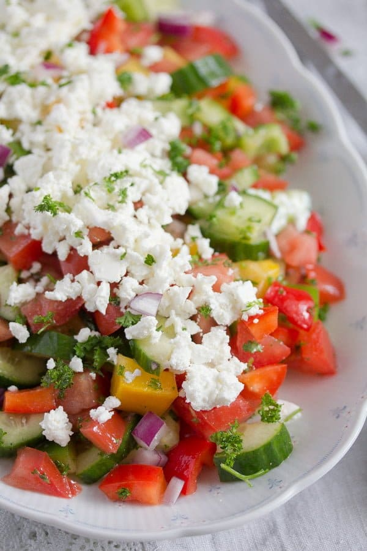

Cookbook
Best cookbook from Croatia to Turkey
Croatian Shopska Salad
...Shopska salad with tomatoes, cucumbers, peppers and feta, a fresh and delightful Bulgarian or Croatian salad...
Ingredients
- Total Time: 20 mins
- 1 large beefsteak tomato
- 3 mini cucumbers
- 3 bell peppers
- 1 medium onion
- 1 handful fresh parsley
- 3 tablespoons sunflower oil
- 2 tablespoons red wine vinegar
- 1 cup feta cheese
- fine sea salt and freshly ground black pepper
Steps
- Salad can be refrigerated for up to 1 hour.
- 1. Chop the tomatoes into cubes. Halve and chop the mini cucumbers. If using a large cucumber, remove the seeds with a tablespoon.
- 2. Chop the bell peppers. Finely chop the onion and the parsley.
- 3. Mix all the vegetables in a large bowl.
- 4. Dressing: whisk together the sunflower oil, red wine vinegar, fine sea salt, and pepper. Add to the salad and stir.
- 5. Crumble the creamy feta on top of the salad. Sprinkle cheese on the salad or mash it with a fork and smear on top of the salad. You can also crumble it and stir it into the salad.
- 6. Adjust the taste with salt and pepper and more vinegar, if you like it.